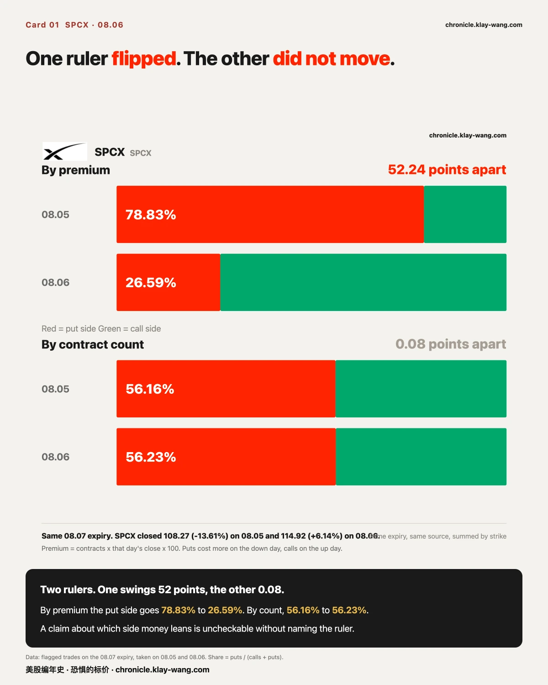
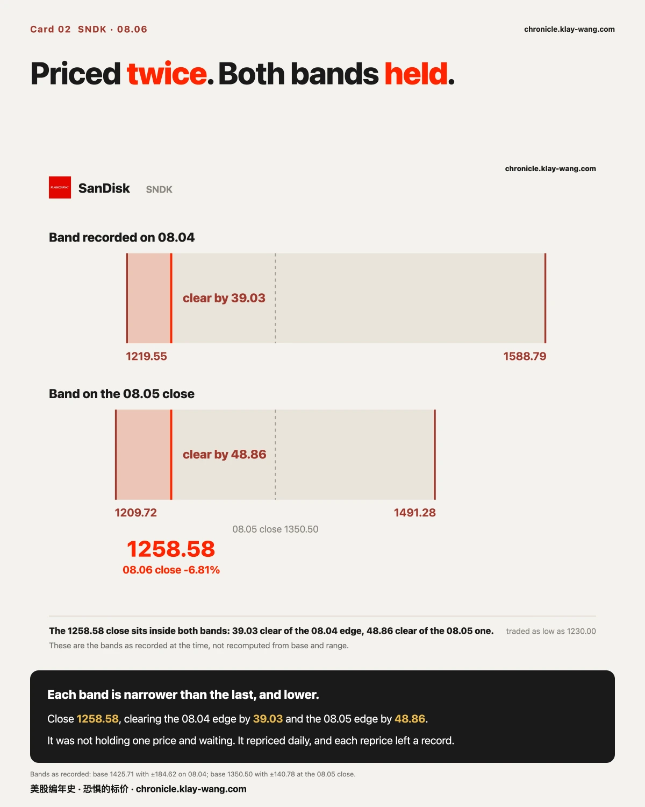
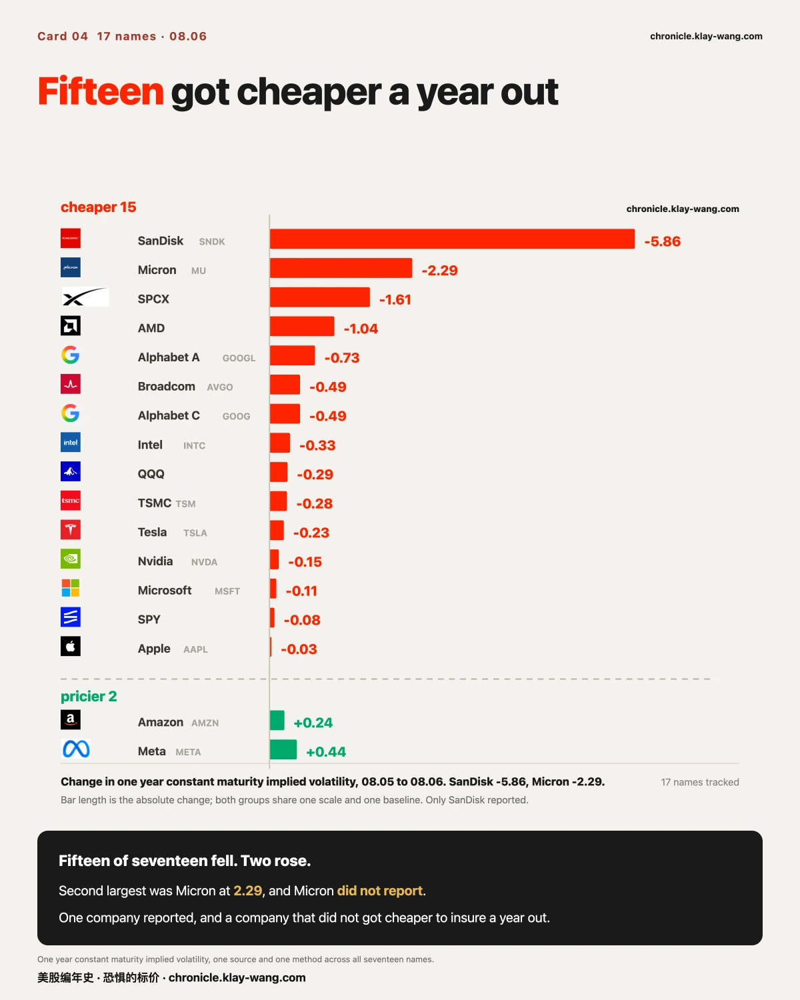
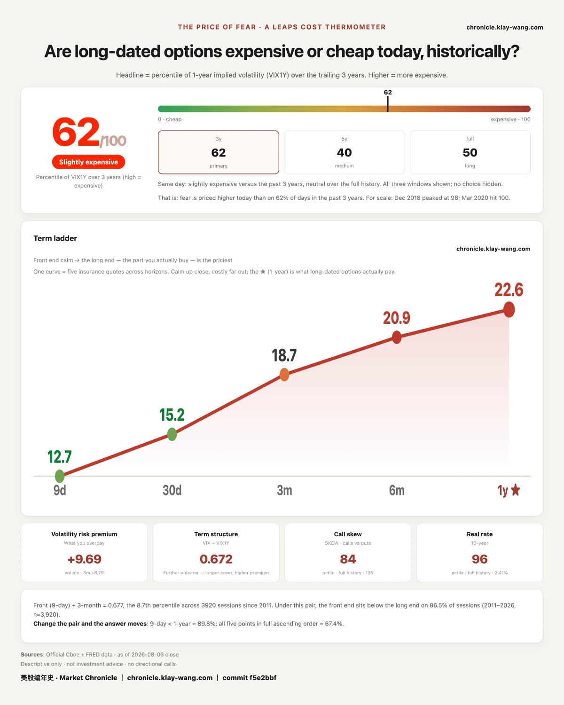

13.69 亿美元，全押在周五上午的一个数字上· 08-06 · 8.3-8.7
Two rulers, opposite answers, same contracts
SPCX reached its first post-listing unlock on 08.06. Put the 08.07 expiry side by side across the
two sessions that straddle it, and the two available rulers disagree completely.
By premium, the money almost entirely left the put side. On 08.05: $262.21M on puts against
$70.42M on calls, or 78.83% on the put side. On 08.06 it inverts: $43.25M on puts against
$119.39M on calls, 26.59%. A move of fifty-two points.
By contract count, nothing happened at all. On 08.05: 660527 puts against 515692 calls,
56.16%. On 08.06: 502245 puts against 390910 calls, 56.23%. Eight hundredths of a point.
The difference is not in the market. It is in how the column is computed: contracts times that
day's closing price times one hundred. SPCX fell 13.61% on 08.05, which made puts expensive that
day. It rose 6.14% on 08.06, which made calls expensive today. Same contracts, different day's
price to multiply by, different story.
Recomputed across three expiry windows, the result holds. This is not a window artifact.
This matters more than SPCX does. Any sentence claiming money is leaning to one side is
uncheckable unless it says which ruler it used. Today those two rulers are fifty-two points apart.
The unlock itself: 911.5 million shares, twenty percent of the 180 day block. Musk's roughly
6.4 billion shares are not included and stay locked until 2027.06.12. An unlock does not change
what a company is worth. It changes how many people can change their minds on the same day.
⚠️ On what that block is worth: the widely quoted figure of about $123 billion is computed at the
$135 IPO price. At the 08.06 close of 114.92 it is about $104.7 billion. A quarter apart. A
dollar figure without its price basis is not a fact.
The result landed inside both bands
SanDisk reported after the 08.05 close: the quarter beat, the guide for the next one did not.
It traded as low as 1230 pre-market on 08.06, down 8.92%, and closed at 1258.58, down 6.81%.
The market had priced this twice before it happened, and both prices were written down:
On 08.04: base 1425.71, implied range ±184.62 (±12.95%), recorded band 1219.55 to 1588.79.
At the 08.05 close: base 1350.50, ±140.78 (±10.42%), recorded band 1209.723 to 1491.277.
Today's close sits inside both. It cleared the lower edge of the 08.04 band by $39.03, or
10.6% of that band's width, and the 08.05 band by $48.86, or 17.4%.
What is worth noticing is the direction the bands moved. As the shares fell from 1425 to 1350 into
the print, the market narrowed the band and shifted it down. It was not holding one price and
waiting. It repriced every day, and every reprice left a record.
Neither side kept a tenth of itself
Last issue left a number anyone could check: of the contracts that traded on the SanDisk 1400 strike
expiring 08.07, how many were actually new positions. Open interest settles overnight, so 08.06
answers it. Both sides answered, and both gave the same shape.
Calls: 6477 traded, open interest 1684 to 2144, a gain of 460. That is 7.1%.
Puts: 3378 traded, open interest 578 to 905, a gain of 327. That is 9.7%.
9855 contracts traded across the two sides. 787 stayed open. Better than nine in ten were opened
and closed within the session.
So the money that arrived in the last half hour before the report mostly did not stay for the
result. It was not waiting for the outcome. It was there for the half hour itself. Last issue said
the shape of the two distributions mattered more than any total; today completes that sentence.
The shape says when the money came. The retention says whether it stayed. It did not.
The call side traded 15831 contracts today and its closing price went from 62.00 to 2.30, down
96.3%.
The put side closed at 141.59, against an intrinsic value of 1400 minus 1258.58, or 141.42.
Seventeen cents of time value. For a deep in the money contract expiring on 08.07, the market is
quoting it as very nearly the stock itself.
🔴 On sourcing: both open interest figures come from the same response and the same ruler. In
that same response the call side returned 2144 and 15831, matching the numbers already in hand.
Fifteen of seventeen got cheaper at one year
Implied volatility collapsing after a report is ordinary. What is worth reading today is how far
out it reached.
At one year (constant maturity): SanDisk from 107.07 to 101.21, down 5.86, the largest in the set.
Second is Micron, 81.29 to 79.00, down 2.29, and Micron did not report today.
Of seventeen names, fifteen fell at the one year point. Only Amazon (+0.24) and Meta (+0.44) rose.
At thirty days the collapse is deeper: SanDisk −17.02, SPCX −9.26, Micron −8.68. The front fell
harder than the back, which says the market treats this as mostly a near term matter. It did not
stay entirely near term.
The one year point is what this gauge exists for: it is the slice you actually pay for when you buy
long dated protection. One company reported, and a company that did not report got 2.29 cheaper
to insure a year out.
Eighty two percent of it expires on 08.07
July payrolls are released on the morning of 08.07. Of the contracts that crossed the line at
today's close:
335 of 440 records expire on 08.07, the day the number prints. That is 82.3% by premium and
86.3% by contract count.
Largest by premium: Micron $331.1M, Tesla $197.4M, Nvidia $194.7M, SPCX $162.6M, SanDisk $114.5M.
The VIX futures curve points the other way on the same day. Spot fell from 15.81 to 15.15, and
the front contract from 17.43 to 17.10, but the spread between the back and front widened from
28.23% to 30.74%. The curve got steeper.
Calmer up close, and no cheaper further out. Both are true at once, which is the shape of the
night before a number: 08.07 is being priced on its own, not spread across the curve.
Thermometer
62 out of 100, on the expensive side. One year implied volatility sits at the 62nd percentile of
the past three years. Across windows: 62 over three years, 40 over five, 50 over the full history.
All three shown, none hidden.
The term ladder climbs from 12.66 at nine days to 22.56 at one year: flatter up close, and the far
end barely moved. What you actually pay for a long dated option is that rightmost point.
It read 64 on 08.05 and 62 on 08.06. On the same day, fifteen names fell at the one year point.
Fear-Price Index by Market Chronicle · Aug 6, 2026 · 62/100: one-year implied volatility (VIX1Y) at 22.56, the 62nd percentile of the past three years. Higher means pricier. Daily ledger & methodology → chronicle.klay-wang.com · Cite as: Fear-Price Index, Market Chronicle

Two things you can check for yourself on 08.07
Once payrolls land, those 335 contracts expiring 08.07 all settle at once. One chapter on the
site updates daily and shows whether yesterday's largest entries are still there. Check after the
08.07 close.
Whether the two rulers disagree again on day two of the unlock. Today premium says the money
left and contract count says nothing moved. Look at the same expiry on 08.07 and you will know
whether today's gap was specific to unlock day or happens every session.
Options activity, name by name → chronicle.klay-wang.com/options
The thermometer and both ledgers → chronicle.klay-wang.com
Both pages update automatically after each close, carry their date, and cannot be edited afterwards.





No investment advice. No direction calls. No market timing.